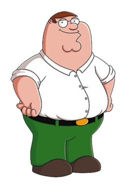

Peter Griffin é um personagem fictício da série de televisão animada "Family Guy". Ele é o patriarca da família Griffin e é conhecido por seu comportamento excêntrico, humor irreverente e personalidade única. Peter é casado com Lois Griffin e tem três filhos: Meg, Chris e Stewie. Ele trabalha em uma fábrica de cerveja e é frequentemente retratado como um homem preguiçoso, mas também é leal à sua família e amigos. O personagem é dublado por Seth MacFarlane, o criador da série, e é um dos personagens mais icônicos da televisão animada.

Deixe seu comentário

Leonardo da Silva Sauro
"Acho o Peter Griffin um ótimo personagem, me inspiro muito nele, tenho até um cachorro chamado Brian"